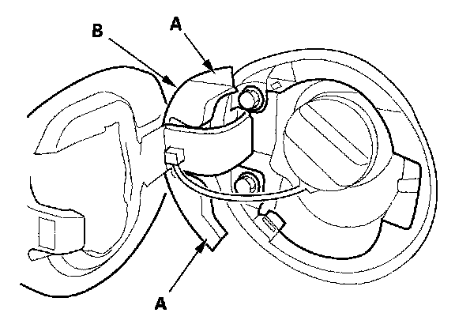
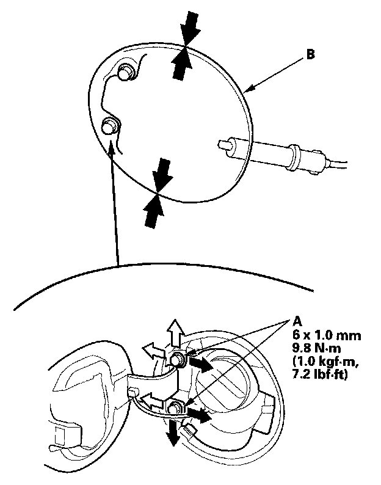
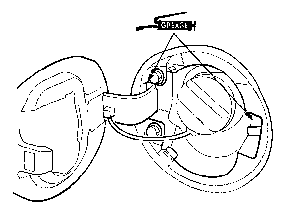

Fuel Door: Adjustments
Adjustment
1. 2-door: Release the hooks (A), then remove the lid (B).

2. Slightly loosen the hinge mounting bolts (A).
3. Adjust the fuel fill door (B) in or out until it's flush with the body, and up or down as necessary to equalize the gaps.
4. Tighten the hinge mounting bolts.
5. Check that the fuel fill door opens properly and locks securely, and check that the rear of the door is flush with the body.

6. Apply multipurpose grease to each location indicated by the arrows.
7. Apply touch-up paint to the hinge mounting bolts and around the hinges.